掘进式衬砌隧道（衬砌-土体接触面滑移）
问题描述
注意
要在 3DEC 中查看该项目，请使用菜单命令 。选择 “BlockSel/ Liner/ AdvancingLinedTunnel”，然后选择 “AdvancingLinedTunnel.prj” 载入。所用的主数据文件（data file）显示在本示例末尾。其余数据文件可在该项目中找到。
本示例演示如何模拟掘进隧道中开挖与施加支护的顺序作业。隧道为圆形断面，位于 5 m 深处的软弹性土体中（\(E\) = 48.2 MPa，\(\nu\) = 0.34），地应力为各向同性的 1 MPa。隧道由厚 0.2 m 的喷射混凝土支护（\(E\) = 10.5 GPa，\(\nu\) = 0.25）。喷射混凝土保持弹性；但衬砌-土体接触面可以分离和/或滑移。本示例复现掘进式衬砌隧道（刚性连接）（Advancing Lined Tunnel (Rigidly Connected)）示例，但将该示例中所用的壳单元替换为这里使用的衬砌单元。壳单元与土体之间为刚性连接，而衬砌单元提供弹性连接，允许形成空隙并发生滑移。在本示例中，先给土体-衬砌接触面赋予很大的黏结强度，以再现壳单元版本（shell element version）的刚性行为；然后将黏结强度设为零，观察滑移及由此产生的应力重分布。
从总长为 2 m 的初始隧道开始。为简便起见，假定开挖在两个隧道面上同时推进；因此只需对隧道的一个四分之一剖面建模，并在三个对称面上施加对称边界条件。（要对这些面上的节点指定正确的对称条件，需先对齐节点局部坐标系，如下文所述。）开挖过程通过给网格单元赋予空材料模型来模拟，然后让应力重新分布。该阶段的模型见 图 1（Figure 1）。接着，通过创建衬砌单元并用 structure liner create by-face 命令将它们附着到隧道表面来安装喷射混凝土。开挖下一段隧道，同样让应力重新分布。该阶段的模型见 图 2（Figure 2）。该开挖顺序可以重复，以跟踪整个隧道施工过程。

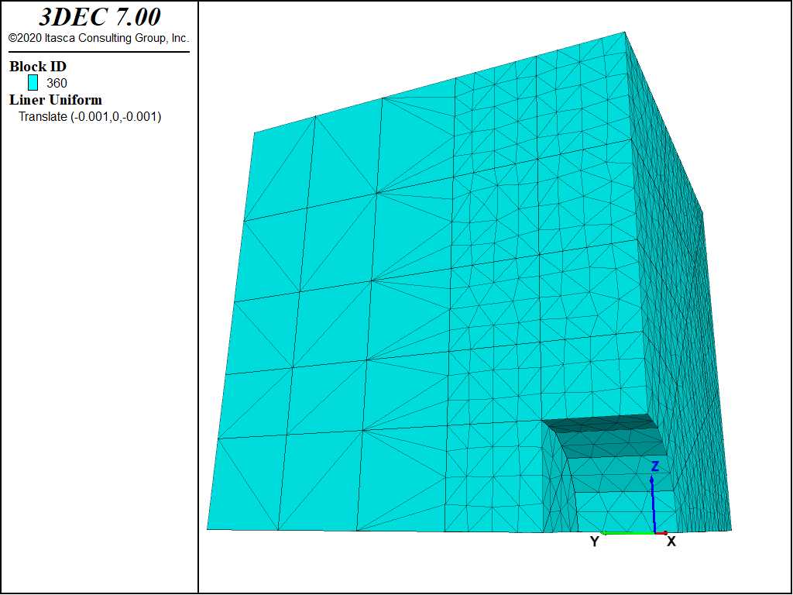
图 1：阶段 1：开挖隧道第 1 段。

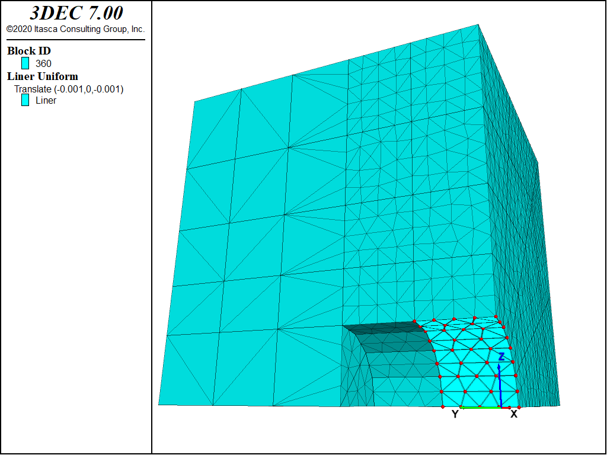
图 2：阶段 2：在第 1 段安装喷射混凝土；开挖隧道第 2 段。
该模型有三个对称面。必须为位于这些面上的节点指定对称边界条件（垂直于平面的位移为零，绕平面内两个轴的转动为零）。这些条件使用 structure node fix 命令指定；但该命令作用于与节点局部坐标系关联的自由度，而所有衬砌单元所用节点的节点局部坐标系在一组循环开始时（或执行 执行计算时步（model cycle） 0 命令时）被自动设定，使得 \(z\) 轴与使用该节点的所有衬砌单元的平均法向方向对齐，而 \(xy\) 轴在衬砌单元切平面内任意取向。对于本模型，默认方向见 图 3（Figure 3）。
位于 \(x\) = 0 和 \(z\) = 0 平面上的节点必须重新定向，才能指定正确的对称边界条件。这通过以下命令完成
struct node system-local x (1,0,0) y (0,-1,0) range position-x 0
struct node fix system-local range position-x 0
struct node fix velocity-x rotation-y rotation-z range position-x 0
struct node system-local x (0,0,-1) y (0,-1,0) range position-z 0
struct node fix system-local range position-z 0
struct node fix velocity-x rotation-y rotation-z range position-z 0
struct node fix velocity-y rotation-x rotation-z range position-y 0
这些命令先重新对齐、然后固定相应的节点局部坐标系，并指定合适的速度固定条件。重新对齐后的坐标系必须用 固定结构节点局部坐标系命令（structure node fix system-local） 命令固定，以防止在下一组循环中自动重新对齐到默认方向。重新对齐这些坐标系时，必须确保局部 \(z\) 轴仍垂直于衬砌切平面，因为节点局部方向定义了衬砌-网格单元的附着条件。最终重新对齐后的节点局部坐标系方向见 图 4（Figure 4）。

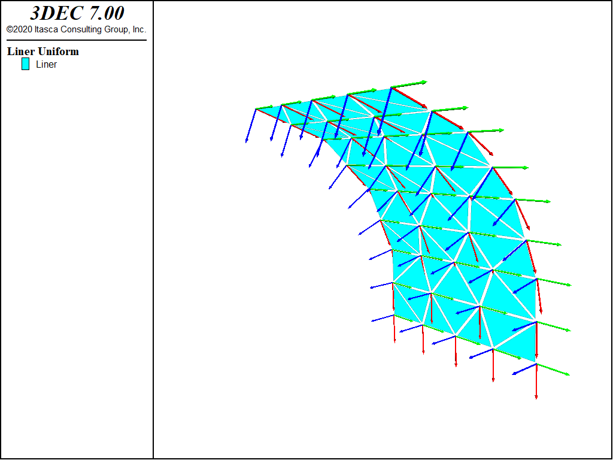
图 3：节点局部坐标系的默认方向。

衬砌-网格单元接触面刚度（\(k_n\) 和 \(k_s\)）取为 7.4 × 1010 N/m3，以保证接触面变形相对于网格单元变形很小：取值依据 衬砌刚度公式（the liner stiffness equation），并按该公式后文所述将数值增大 100 倍。（下文将确认本系统满足接触面变形很小的判据。）
在第一次运行中，给衬砌-网格单元接触面赋予很大的黏结强度。该模型的行为应类似于刚性连接系统（rigidly connected system）的行为。图 5（Figure 5） 和 图 6（Figure 6） 分别给出了无支护和有支护情况下第二个开挖阶段中发生的位移。每幅图中都包含隧道拱顶处的 \(z\) 位移时程。可以看到，支护使拱顶位移从约 12 mm 减小到 1 mm。

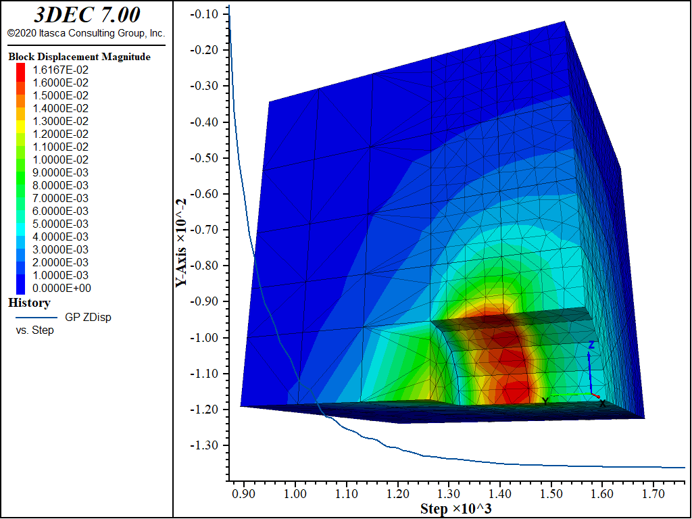
图 5：阶段 2 中的位移——无支护。

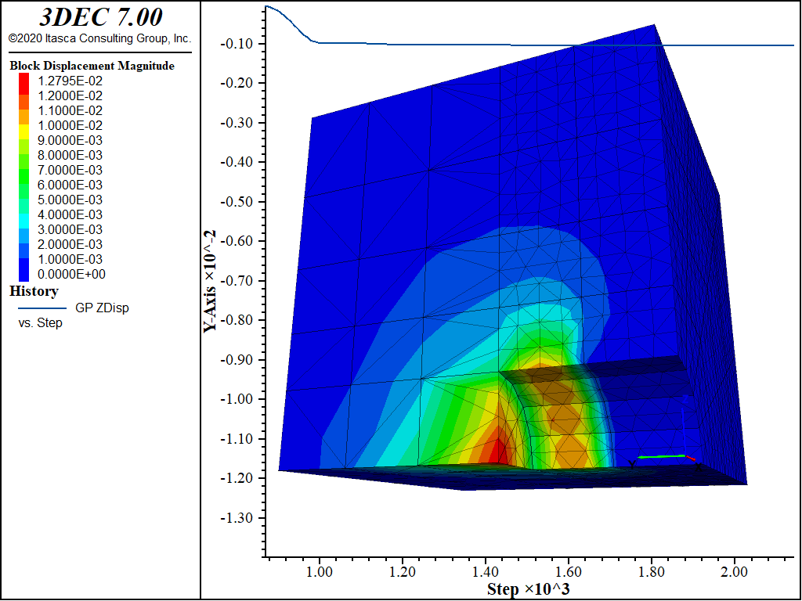
图 6：阶段 2 中的位移——喷射混凝土支护（衬砌-网格单元黏聚力 = 1020）。
弯曲应力合力 \(M_x\)（其中 \(x\) 方向沿隧道轴线）见 图 7（Figure 7）。可以看到，衬砌前端靠近隧道掌子面处弯曲最为剧烈。图 8（Figure 8） 中衬砌的变形形状图表明，这种剧烈弯曲源于较大的挤压变形。这两幅图可与壳单元版本（corresponding figures）的相应图（from the shell element version）对比。二者的高度相似表明系统行为与刚性连接情况一致。

图 7：阶段 2 结束时的弯曲应力合力 \(M_x\)（衬砌-网格单元黏聚力 = 1020）。

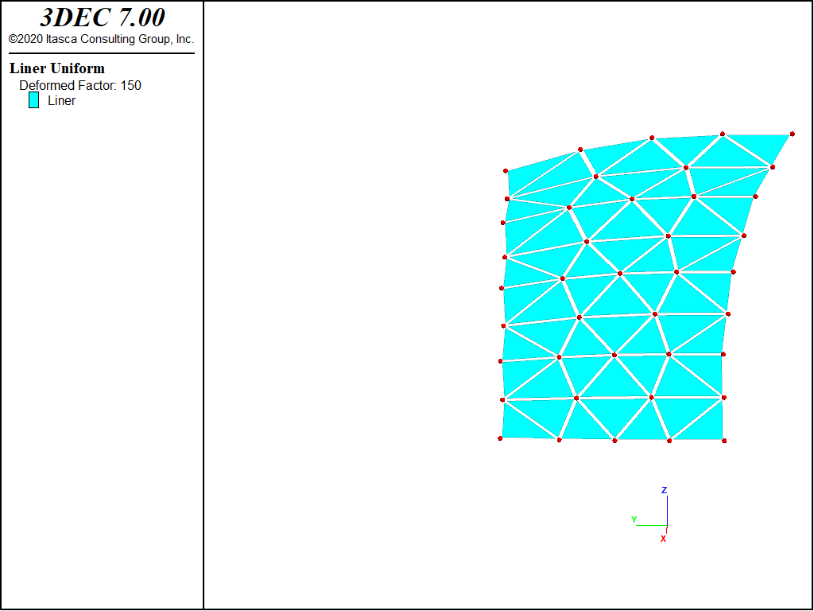
图 8：阶段 2 结束时喷射混凝土的变形形状（放大 150 倍）（衬砌-网格单元黏聚力 = 10 20）。
通过绘制隧道拱顶处网格点、节点和耦合弹簧的法向位移（见 图 9（Figure 9）），确认接触面变形相对于网格单元变形很小（从而确认 \(k_n\) 和 \(k_s\) 的取值足够大）。若将 \(k_n\) 和 \(k_s\) 取为当前值的 1/100 重新运行模型，可以发现接触面变形相对于网格单元变形不再很小（见 图 10（Figure 10））。这导致衬砌承受的荷载降低。弯曲应力合力 \(M_x\) 的最大值比先前值小 44%（对比 图 11（Figure 11） 和 图 7（Figure 7））。为获得正确的系统响应，\(k_n\) 和 \(k_s\) 的取值必须足够大，以使接触面变形相对于网格单元变形很小。

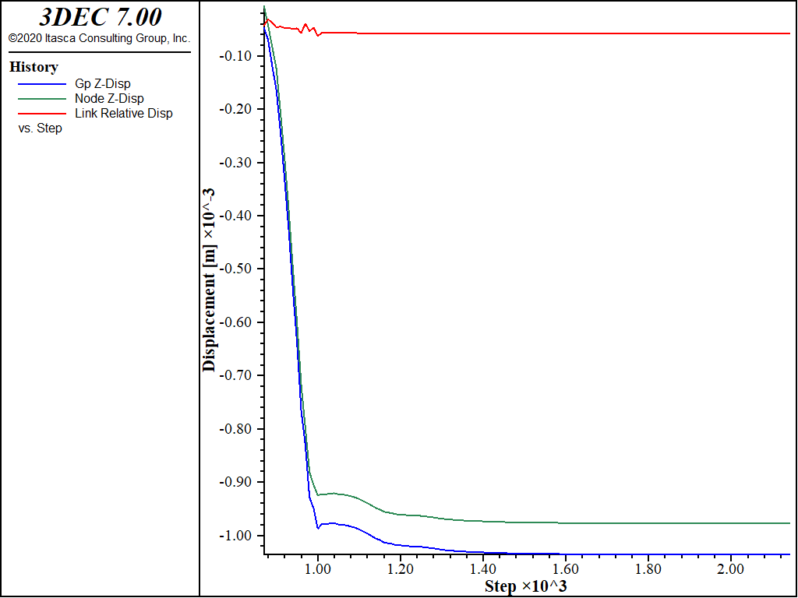
图 9：阶段 2 结束时隧道拱顶处网格点、节点和耦合弹簧的法向位移（衬砌-网格单元黏聚力 = 1020）。

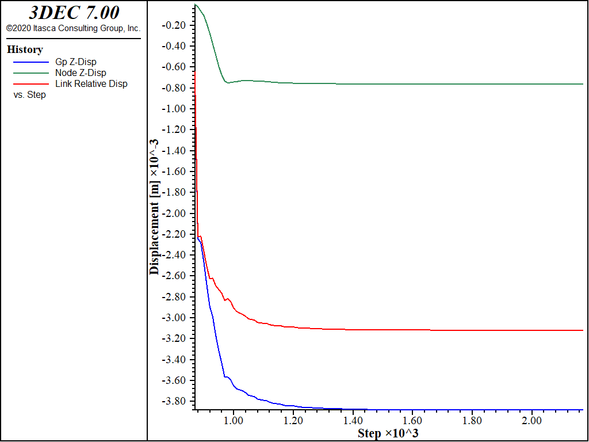
图 10：阶段 2 结束时隧道拱顶处网格点、节点和耦合弹簧的法向位移（\(k_n\) 和 \(k_s\) 减小 100 倍；衬砌-网格单元黏聚力 = 1020）。

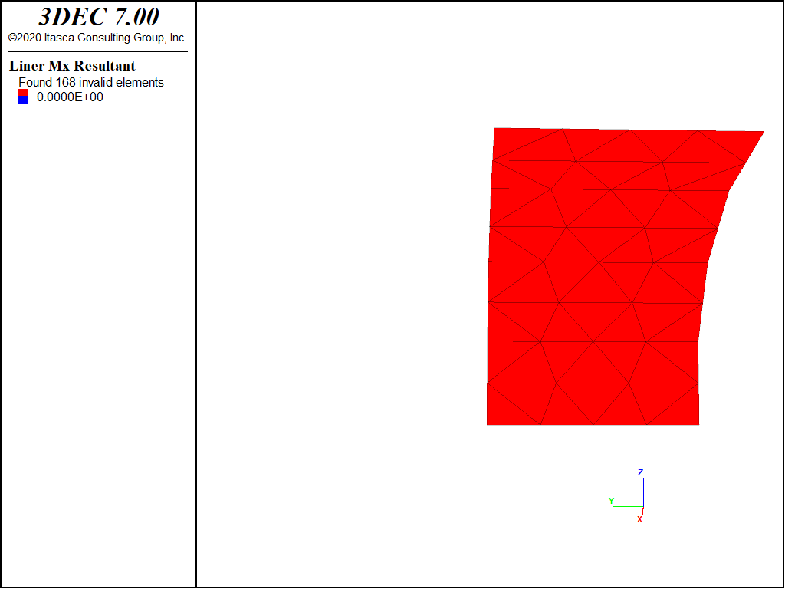
图 11：阶段 2 结束时的弯曲应力合力 \(M_x\)（\(k_n\) 和 \(k_s\) 减小 100 倍；衬砌-网格单元黏聚力 = 1020）。
阶段 2 结束时作用在衬砌上的法向应力和剪应力见 图 12（Figure 12） 和 图 13（Figure 13）。两种应力均在靠近隧道掌子面的衬砌前端附近最大。这些应力导致 图 8（Figure 8） 中看到的挤压变形。若将土体-衬砌接触面的黏结强度设为零并循环至平衡，可以观察到，随着作用在衬砌上的剪应力趋于零，衬砌沿全局负 \(y\) 方向回弹（见 图 14（Figure 14））。作用在衬砌上的法向应力和弯曲应力合力 \(M_x\) 仅受到很小影响。

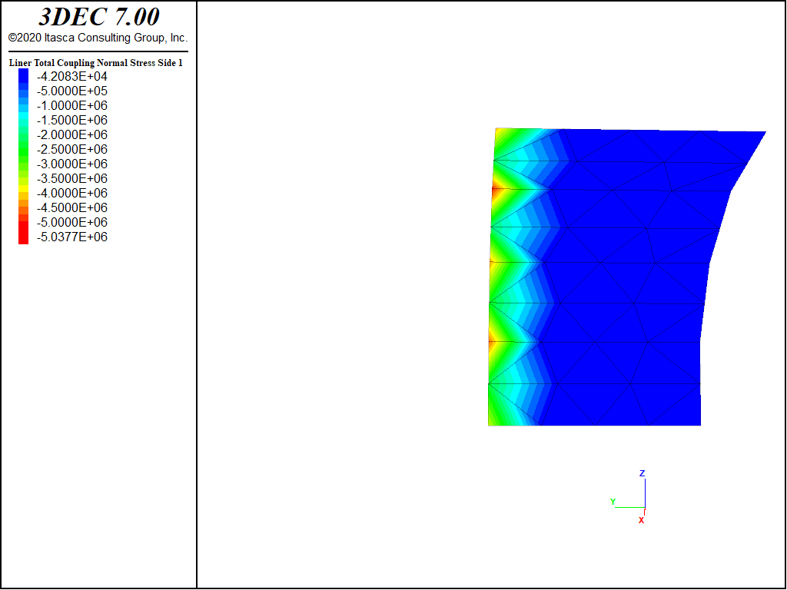
图 12：阶段 2 结束时作用在衬砌表面上的法向应力（衬砌-网格单元黏聚力 = 1020）。

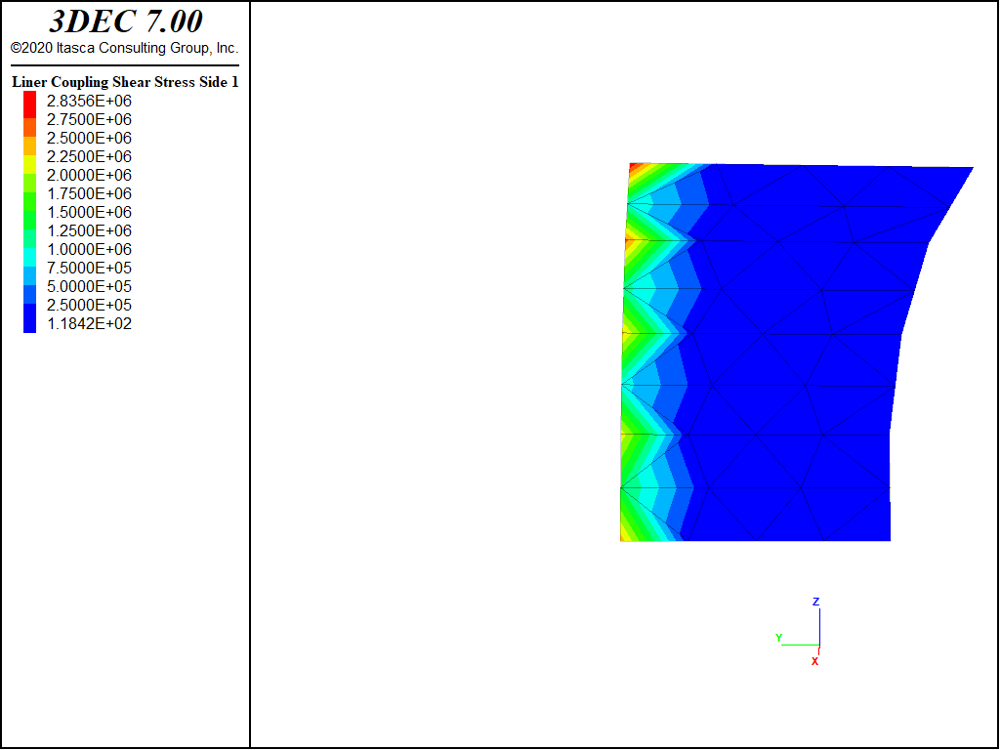
图 13：阶段 2 结束时作用在衬砌表面上的剪应力（衬砌-网格单元黏聚力 = 1020）。

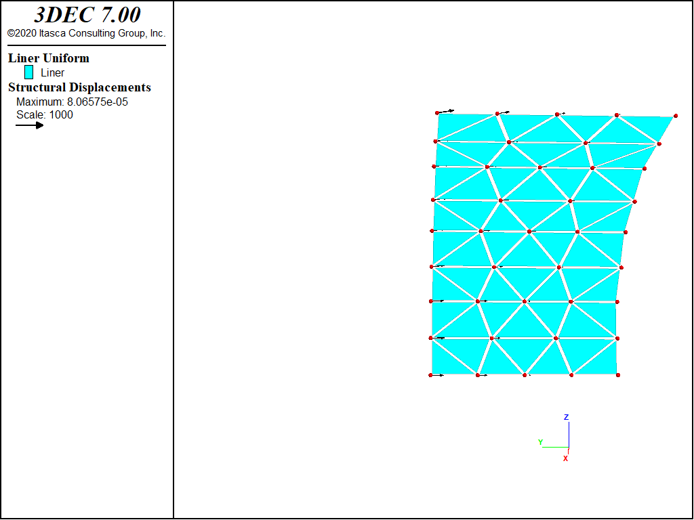
图 14：阶段 2 后将衬砌-网格单元黏聚力设为零所产生的衬砌位移。
再进行一个开挖阶段。该阶段结束时模型见 图 15（Figure 15）。通过再次发出 structure liner create by-face 命令并指定与第 1 段衬砌不同的 ID 号，喷射混凝土支护已延伸至隧道第 2 段。这在两段喷射混凝土之间形成“冷缝”。（接触面处将出现一组双节点，其中一个由第 1 段使用，另一个由第 2 段使用。相邻衬砌单元之间不传递力和弯矩；而是仅在公共位置向周围网格单元传递力。这模拟了并排的两个独立衬砌段。）阶段 3 中发生的变形开始加载新的衬砌段，并在先前衬砌段中产生附加荷载。位移场和弯曲应力场（见 图 16（Figure 16））在该缝处均不连续。

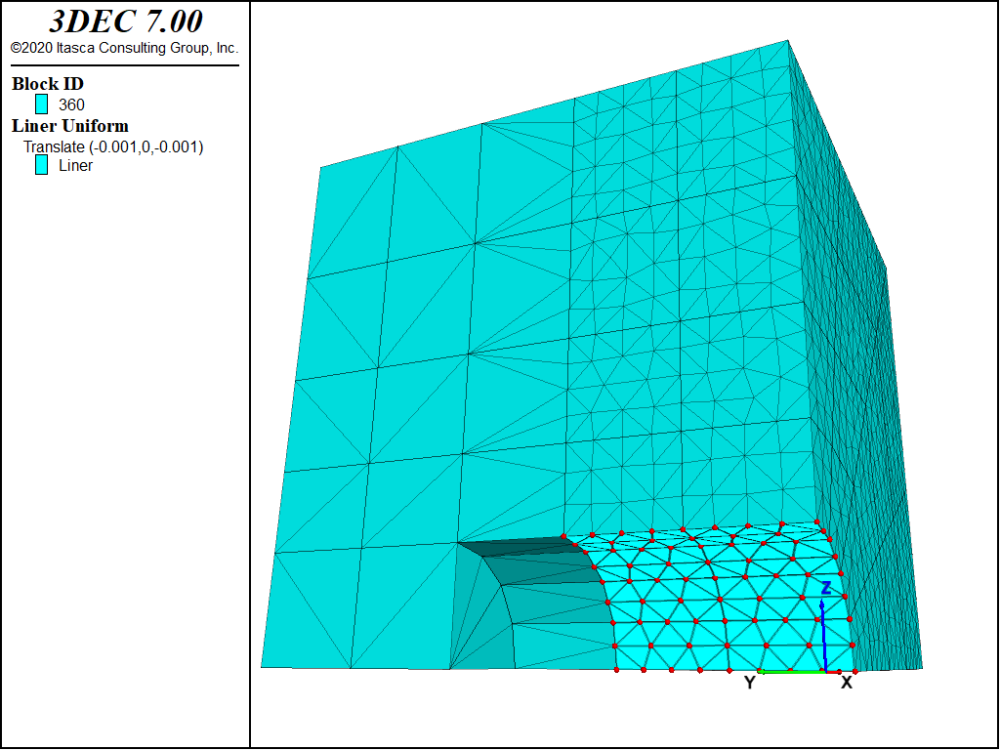
图 15：阶段 3：在第 2 段安装喷射混凝土；开挖隧道第 3 段。

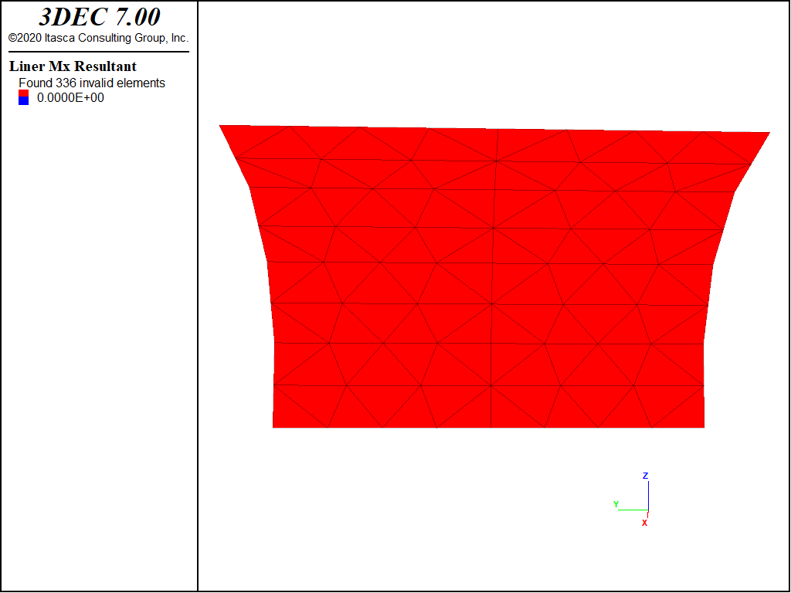
图 16：阶段 3 结束时的弯曲应力合力 \(M_x\)（衬砌-网格单元黏聚力为零）。
数据文件
AdvancingLinedTunnel.dat
; 衬砌结构单元应用算例
; 衬砌与土体接触面允许滑移的隧道推进开挖
model new
model random 10000
model large-strain off
fish automatic-create off
model title 'Advancing Lined Tunnel with Slip (using liners)'
; 创建模型几何形状
block create tunnel radius 1.0 length 0 5 ...
blocks-radial 4 blocks-tangential 2 blocks-axial 5 radius-ratio 1.1
block join
; 采用四分之一对称模型
block delete range pos-x -5 0
block delete range pos-z -5 0
block group 'rock'
block group 'tunnel' range cylinder end-1 0 0 0 end-2 0 5 0 radius 1
block zone generate edgelength 0.25 range pos-y 0 2
block zone generate edgelength 1.0 range pos-y 2 5
; 为模型区域命名
block group 'section1' range position-y 0 1 group 'tunnel'
block group 'section2' range position-y 1 2 group 'tunnel'
block group 'section3' range position-y 2 3 group 'tunnel'
block group 'section4' range position-y 3 4 group 'tunnel'
block group 'section5' range position-y 4 5 group 'tunnel'
block face group 'shotcrete1' range group-intersection 'rock' 'section1'
block face group 'shotcrete2' range group-intersection 'rock' 'section2'
block face group 'shotcrete3' range group-intersection 'rock' 'section3'
; 材料模型和参数
block zone cmodel assign elastic
block zone property dens 2000 bulk 50e6 shear 18e6
; 开挖块体的接触参数
block contact material-table default prop stiff-norm 1e8 stiff-shear 1e8
; 初始条件
block insitu stress -1e6 -1e6 -1e6 0 0 0
; 边界条件
block gridpoint apply velocity-x 0 range position-x 0.0
block gridpoint apply velocity-y 0 range position-y 0.0
block gridpoint apply velocity-z 0 range position-z 0.0
block gridpoint apply velocity 0 0 0 range union position-x 5.0 ...
position-y 5.0 ...
position-z 5.0
; --- 阶段 1：开挖第 1 段隧道
block excavate range group 'section1'
model solve
model save 'tun1'
;
; --- 阶段 2：开挖第 2 段隧道
block gridpoint initialize displacement (0,0,0)
block history name 'zdisp' displacement-z position (0,1,1)
block history name 'zvel' velocity-z position (0,1,1)
block excavate range group 'section2'
model save 'tun2-initial'
; --- 求解无支护工况
model solve
model save 'tun2-nosupport'
; --- 求解喷射混凝土支护工况
model restore 'tun2-initial'
struct liner create by-block-face id=1 range group 'shotcrete1'
struct liner property isotropic=(10.5e9, 0.25) thickness=0.2
struct liner property coupling-stiffness-normal=7.4e10 ...
coupling-stiffness-shear=7.4e10 ...
coupling-cohesion-shear=1e20
model cycle 0
model save 'tun2-temp1'
; --- 为三个对称面上的节点指定对称条件
struct node system-local x (1,0,0) y (0,-1,0) range position-x 0
struct node fix system-local range position-x 0
struct node fix velocity-x rotation-y rotation-z range position-x 0
struct node system-local x (0,0,-1) y (0,-1,0) range position-z 0
struct node fix system-local range position-z 0
struct node fix velocity-x rotation-y rotation-z range position-z 0
struct node fix velocity-y rotation-x rotation-z range position-y 0
struct node history name 'znode' displacement-z position 0 1 1
struct liner history name 'ndis' coupling-displacement-normal ...
node 3 component-id=45
model cycle 0
model save 'tun2-temp2'
model solve
model save 'tun2a'
; 降低刚度后重复开挖，降低倍数为 100
model restore 'tun2-temp2'
struct liner property coupling-stiffness-normal=7.4e8 ...
coupling-stiffness-shear=7.4e8 ...
coupling-cohesion-shear=1e20
model solve
model save 'tun2a-lowstiff'
; 采用较大刚度继续开挖，并降低黏聚力
model restore 'tun2a'
struct node initialize displacement (0,0,0)
struct liner property coupling-cohesion-shear=0.0
model solve
model save 'tun2b'
; --- 阶段 3：开挖第 3 段隧道
block excavate range group 'section3'
struct liner create by-block-face id=2 range group 'shotcrete2'
; --- 为三个对称面上的节点指定对称条件
struct node system-local x (1,0,0) y (0,-1,0) range position-x 0
struct node fix system-local range position-x 0
struct node fix velocity-x rotation-y rotation-z range position-x 0
struct node system-local x (0,0,-1) y (0,-1,0) range position-z 0
struct node fix system-local range position-z 0
struct node fix velocity-x rotation-y rotation-z range position-z 0
struct node fix velocity-y rotation-x rotation-z range position-y 0
struct liner property isotropic=(10.5e9, 0.25) thickness=0.2 range id 2
struct liner property coupling-stiffness-normal=7.4e10 ...
coupling-stiffness-shear=7.4e10 ...
coupling-cohesion-shear=0.0 range id 2
model solve convergence 1
model save 'tun3'
| 这些内容对您有帮助吗？… | FLAC3D © 2019, Itasca | 原文更新于 2020 年 10 月 8 日 |